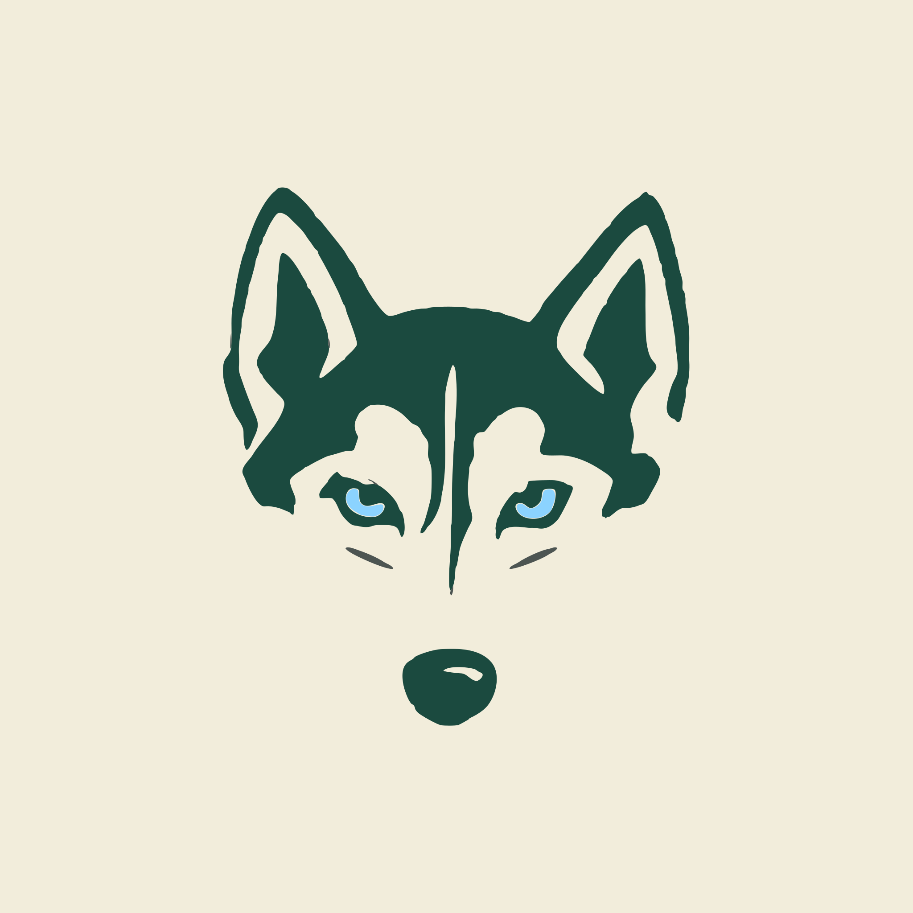
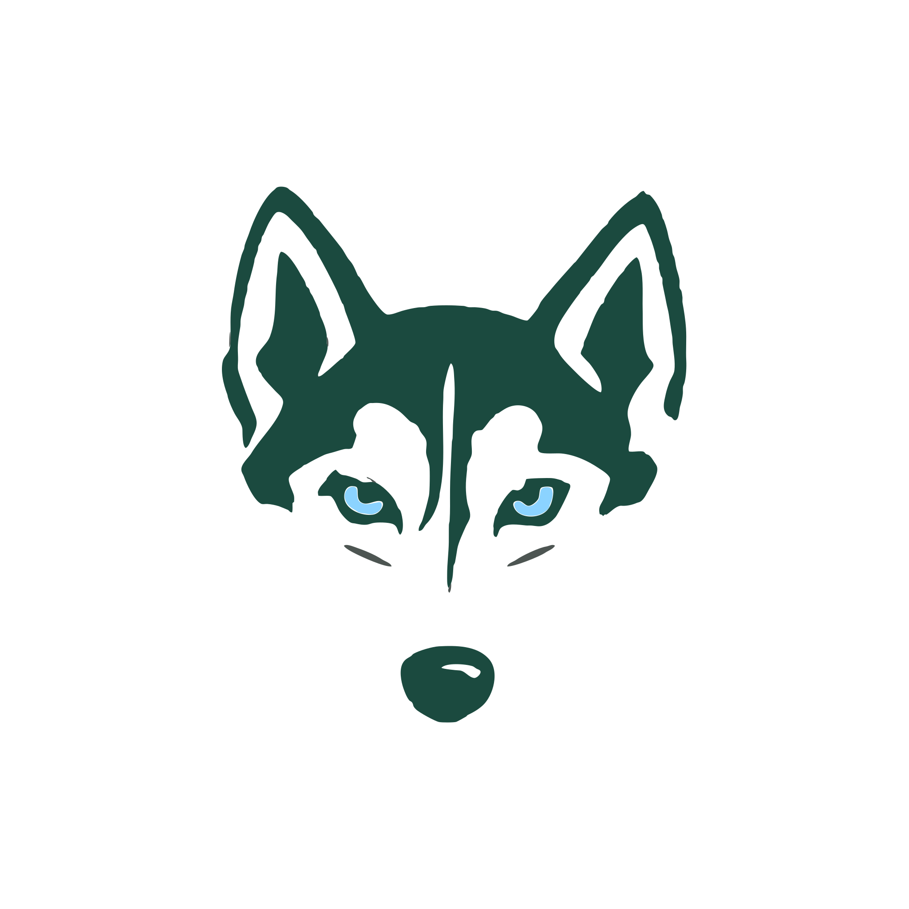

CANOPY
--:--:--
---
---
SNAPSHOT
OTTAWA
▸
CANOPY
THE BENCH
◂
1/1
▸

SECTIONS
HOME
SITREP
DECK
WORKBENCH
DAYBOOK
SITREP
SITREP HOME
WEATHER
CAMERAS
AIRPORT
LIVE TV
WORLD
DECK
TEAM ROOM
OAKLEY
CLAUDE
CHATGPT
GEMINI
PERPLEXITY
ENGINEERING
MEDIA
DAYBOOK
DAY TO DAY
CALENDAR
BUDGET
INVESTMENTS
SHOPPING
NOTES
AUTOMATION
COMMUTE
TRUCK
SECURITY
SOCIAL
WORKBENCH
ALL APPS
✕ CLOSE
WORKBENCH
⌕
SEARCH SECTIONS
CANOPY
✕ CLOSE